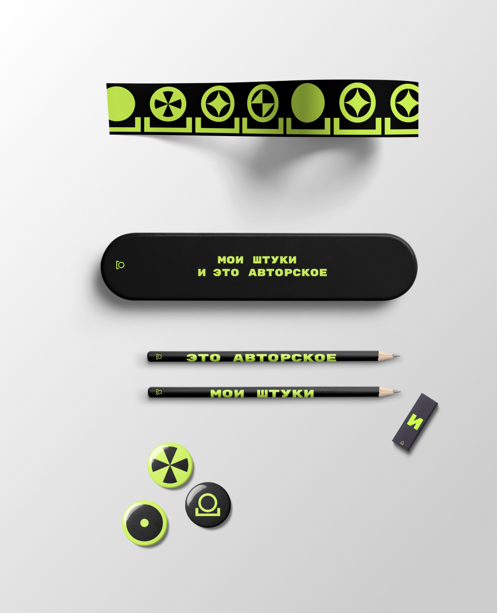

fan.
стайлгайд
о бренде
о fan.
Мы — сервис для создания таймлайнов вымышленных вселенных.
о бренде
В основе Fan. лежит идея о тайном сообществе людей, увлечённых разными фэндомами. Он построен на идее об объединении разных сообществ фанатов на одной платформе. Для бренда важно создать среду для творчества, самовыражения через описание фантастических вселенных.
интересующийся
творческий
активный
увлеченный
фантастический
миссия
Развивать творческое самовыражение в контексте продвижения культуры вымышленных вселенных.
ЗНАК
Базовый логотип сервиса — символ тайного сообщества для посвящённых. С одной стороны, логотип подразумевает пространство для творчетства, с другой стороны, отсылает к точке-элементу таймлайна.
Динамический
В динамических вариациях сервис раскрывается с разных сторон, отражая разнообразие мира фандомов и создавая тайный язык для сообщества Fandot.
Основной знак
Авторский контент
Место фандотерской силы, очень помогает создавать таймлайны
Магические вселенные
Очень хорошее, атмосферное место, где в воздухе витает магия
Новостной контент
Место сбора фандотеров, где можно обмениваться новостями любимого фандома
Технологические вселенные
Место с хорошим вайфаем для создания топовых таймлайнов
использование
Знак может масштабироваться до 24px, помещается на все носители без шрифтового написания.
Цветовые сочетания в логотипе.
цвета
В основе выбора всего трех цветов лежит идея лаконичности. Белый и черный — формализм Fan. Зеленый же — технократичность и фантастичность.
Палитра
White

#FFFFFF
Black

#000000
Acid lime

#D2FB51
Соотношение

ТИпографика
Rubik
Аа Бб Вв Гг Дд Ее Ёё Жж Зз Ии Йй Кк Лл Мм Нн Оо Пп Рр Сс Тт Уу Фф Хх Цц Чч Шш Щщ Ъъ Ыы Ьь Ээ Юю Яя
Rubik Mono One
А Б В Г Д Е Ё Ж З И Й К Л М Н О П Р С Т у Ф Х Ц Ч Ш Щ Ъ Ы Ь Э Ю Я
Плавность и округлость шрифта сочетается со знаком сервиса. Выбор также вдохновлен идеей об общности комьюнити.
текстовые стили
Заголовок — x regular (164) — Rubik Mono One
Подзаголовок — 0.2x (36) UPPERCASE — Rubik
Подпись — 0.2x (36) — Rubik
1.
Таймлайны
2.
О НАС
3.
Fan. предоставляет возможность создания бесконечного множества таймлайнов относящихся к одному и тому же продукту. Смотри разные версии, компилируй, сравнивай и создавай своё.
Сетка
Концепция
Наш символ (тайного сообщества) — основной элемент айдентики. В нем виден весь концепт медиа сервиса. На нем и строится сетка.
Построение
1.
Ширина скобки — ширина колонки

2.
Высота бордюра скобки — x. Ширина марджина — 2x.
3.
Ширина бордюра скобки — ширина межколонника.
Итог
Должна получиться пятиколончатая сетка.

Форматы
В зависимости от формата сетка может растягиваться либо по длине, либо по ширине, но не в обоих направлениях сразу. В этом случае межколонник и марджин должен оставаться неизменным.
изображения
Все изображения с персонажами должны содержать обтравленную фигуру человека (существа), смотрящего на зрителя

Да,
Героиня смотрит на зрителя
Нет,
Героиня смотрит всторону
Используются фотографии из реального мира. На них мы показываем, как живет сервис и его символ в пространстве города или в жизни человека. Знак на таких фотографиях должен быть отцентрован.

Да
Нет
композиция
вариации
1.
Персонаж в знаке

Голова персонажа должна вписываться по размеру в окружность знака. Подписи располагаются по краям сетки.
2.
Композиция без знака

В композиции без знака персонаж должен быть изображен в полный рост, а его голова должна быть вписана в колонку сетку.
3.
Текстовая композиция
Текстовые композиции — всегда призыв. Выключка должна быть центральной, максимальный отступ — марджин сетки. Знак должен быть расположен в нижней части композиции.
Tone of voice
Fan. — это пространство для коммуникации, дискуссии и увлечений. Мы не просто медиа-сервис, потому что не могли бы существовать без коммьюнити. Наша миссия — создать среду для творчества и самовыражения. Именно поэтому мы всегда обращаемся к пользователю как к другу.
пользователь — друг
Обращение
на «ты»
мы — коммьюнити
тайное сообщество
узконаправленные
термины
общие интересы
вайб лозунгов и самиздата
побудительные
глаголы
вовлеченное сообщество
Носители
физические

Диджитал
Тёмная тема
На сайте используется тёмная тема, собранная
с этими цветами, согласно слоям наложения
valley
#030303
Фон страниц
mist
#BBB
Второстепенный текст
hill
#1E1E1E
Слой 1
fog
#8D8D93
Третьестепенный текст
ridge
#272728
Слой 2
haze
#000 60%
Оверлей
canyon
#141515
Вдавленные элементы
gloom
#1E1E1E 100% > #1E1E1E 0%
Оверлей для скрытия лишнего текста
volcano
#FB5151
Ошибка
типографика
Для основных заголовков на сайте используется отдельный шрифт
Gymkhana
Аа Бб Вв Гг Дд Ее Ёё Жж Зз Ии Йй Кк Лл Мм Нн Оо Пп Рр Сс Тт Уу Фф Хх Цц Чч Шш Щщ Ъъ Ыы Ьь Ээ Юю Яя
Accent
Gymkhana 96 / 115 line-height. Коды ошибок, стилизованные заголовки
Counter
Rubik 64 / 76 line-height. Счётчик рейтинга на странице таймлайна
h1
Gymkhana 34 / 43 line-height. Основные заголовки, названия, ник на странице профиля
h2
Gymkhana 24 / 26 line-height. Названия таймлайнов на карточках
h3
Rubic 24 medium / 24 line-height. Ники, загловки
Description
Rubik 32 / 37 line-height. Описание таймлайна на странице таймлайна
Text-large
Rubik 24 / 29 line-height. Ники, названия таймлайна на текстовой карточке
Text-small
Rubik 14 / 24 line-height. Основной текст